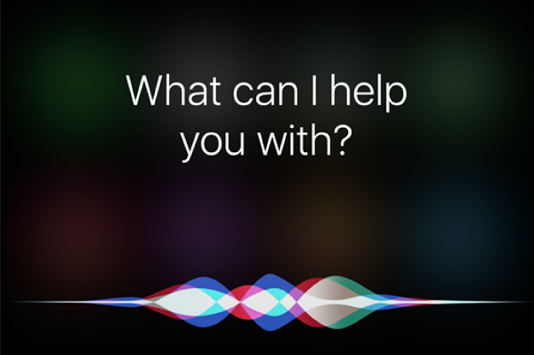

-
AI-based robots are designed to be like humans, with the ability to assist in everyday tasks.
AI-Robots are machines based with artificial intelligece with the main goal to assist humans in tasks. AI allows a program, or robot, to learn from it's past mistakes to become smarter and more advanced. The current mindset has been to create a machine that is able to do simple tasks like opening spotify, playing Despacito, or simply be a lackluster conversational partner. Many of the current AI technologies that exist today have some sort of coversational ability. This conversational ability is usually commanding a task and getting a response back. Technologies like Siri, Amazon Echo, or Cortana are some to name a few.
There are also many that are striving to achieve a fully humanoid robot. These robots are designed to replicate a human appearance, and strive to be like a human. They have complex conversational ability, being able to talk back-and-forth to another human, and essentially think for themselves. They are also being looked at for the ability to complete simple tasks physically. Some examples of this are pouring drinks, walking items from point a to point b, or laying out items in a specific manner (I.e. setting up dinner).
Not all Artificially intelligent programs need to be in a physical form. There are many examples in which the AI is all based within a website or some program. This can be seen through chatbots when you enter a website. They are there to replace human-based customer service, and are able to reply instantly to any needs you request. In it's current form it's still flawed and human-based interaction is better, but as it gets better they may be able to fully replace customer service representatives.